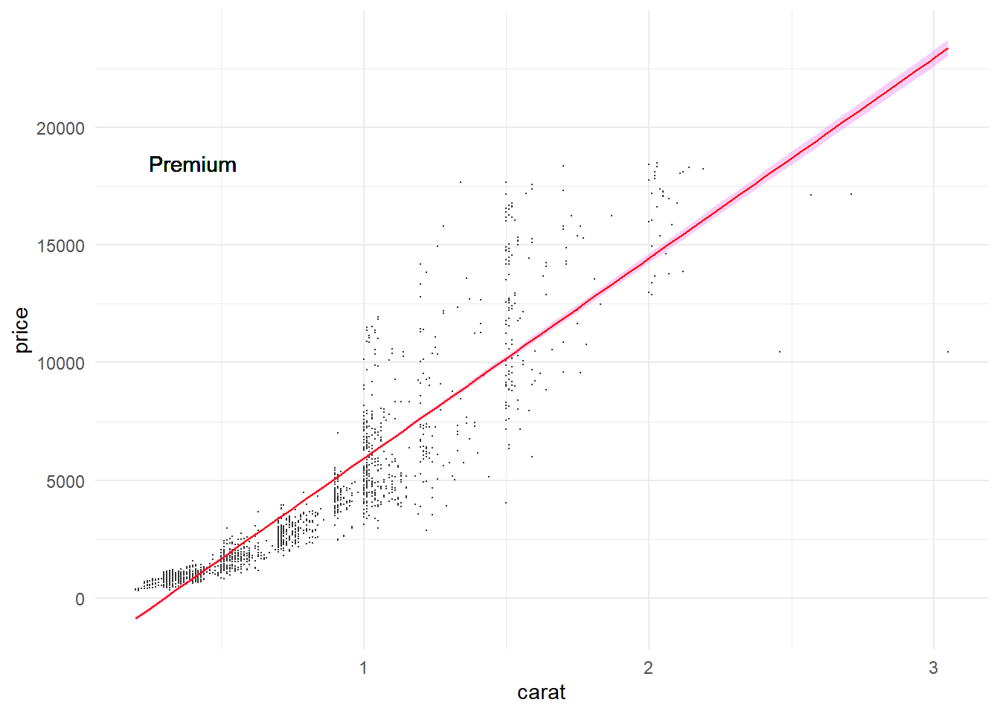
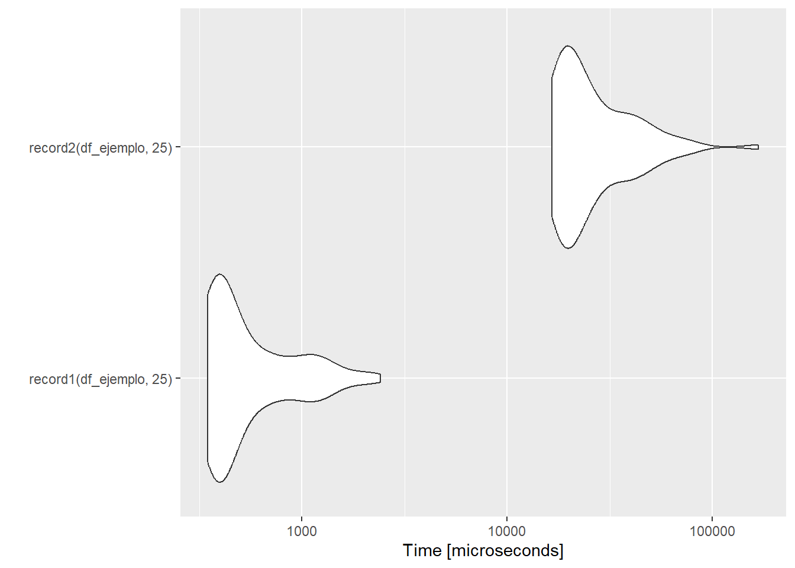
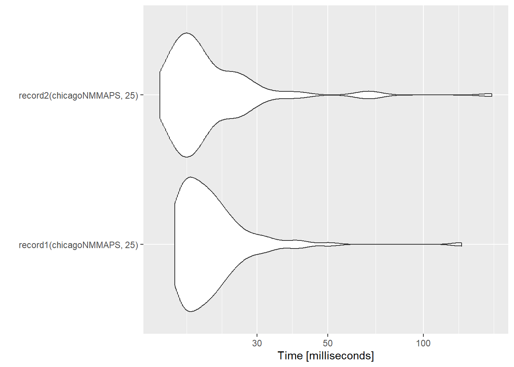
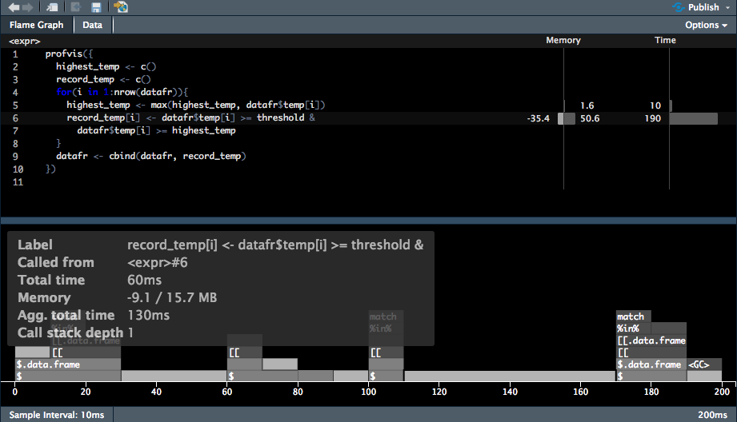
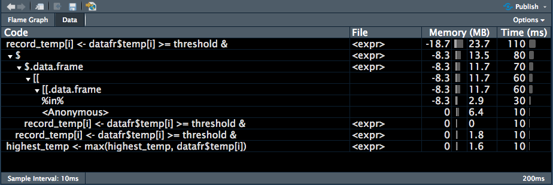

R para computación de altas prestaciones
1.3 Funciones

Moisés Gualapuro - moises.gualapuro@ikiam.edu.ec - Universidad Regional Amazónica IKIAM, Tena (Ecuador)
CONTENIDO
1. Resultados de aprendizaje
Al finalizar la unidad, el estudiante será capaz de:
Escribir funciones para analizar datos.
Utilizar funciones para analizar datos.
2. Funciones
Existen varias funciones pre-cargadas en R las cuales puede ser utilizadas a la vez para esscribir nuevas funciones.
Se tiene operaciones para las cuales no se tiene funciones definidas, por lo tanto deben ser escritas. Una función es un bloque de instrucciones que pueden ser utilizadas continuamente en un programa, es decir, permite automatizar operaciones. Generar funciones es más productivo que copiar y pegar las instrucciones cada vez que se necesita, por lo tanto tiene las siguientes ventajas:
Se asigna un identificador que permite reconocer lo que realiza la función.
Se requiere pocos cambios, en general solamente los argumentos.
Se evita errores accidentales que pueden ocurrir al copiar y pegar.
Se puede utilizar para escribir nuevas funciones.
Se tiene una forma compacta para operar.
Facilita el aprendizaje del lenguaje de programación.
La estructura de una función es la siguiente:
nombreFuncion <- function(argumento1, argumento2, ...){
instruciones
return(resultado)
}Se requiere una función cuando se repite (copia y pega) una instrucción por más de tres veces. Como en el siguiente caso ejemplo, donde se busca calcular la reescalar un valor con la fórmula:
\[x_{i} = \dfrac{x-mean(x)}{sd(x)}\]
df <- data.frame(a = rnorm(10),
b = rnorm(10),
c = rnorm(10),
d = rnorm(10))
df$a <- (df$a - mean(df$a, na.rm = TRUE)) / (sd(df$a, na.rm = TRUE))
df$b <- (df$b - mean(df$b, na.rm = TRUE)) / (sd(df$a, na.rm = TRUE)) # error
df$c <- (df$c - mean(df$c, na.rm = TRUE)) / (sd(df$c, na.rm = TRUE))
df$d <- (df$d - mean(df$d, na.rm = TRUE)) / (sd(df$d, na.rm = TRUE))En este ejemplo, se repite una instrucción que podríamos optimizar generando una función. Antes de continuar vamos a revisar funciones con las cuales tenemos mayor familiaridad.
Funciones precargadas en R
Se tiene muchas funciones que ya están predefinidas en R, aquí algunas de ellas:
| Tipo | Función | Descripción |
|---|---|---|
| Numérico | abs(x) |
Valor absoluto [ abs(-32.3)=32.3] |
sqrt(x) |
Raíz cuadrada [ sqrt(25)=5] |
|
ceiling(x) |
Entero superior [ ceiling(2.3)=3] |
|
floor(x) |
Entero inferior [ floor(2.3)=2] |
|
trunc(x) |
Truncar, es seleccionar solamente el valor entero [ trunc(2.3)=2] |
|
round(x, digits=n) |
Redondear [ round(2.33273427247, digits=4)=2.3327] |
|
signif(x, digits=n) |
Cifras significativas [ signif(2.33273427247, digits=4)=2.3327] |
|
cocs(x), sin(x), tan(x) |
Funciones trigonométricas [ cos(pi)=-1] |
|
log(x), lo10(x), log2(x), log(x, base) |
Logaritmos [ logb(81 , 3)=4] |
|
| Texto | substr(x, star=n1, stop=n2) |
Extraer o reemplazar un “subtexto” en un vector de exto,
|
grep(patrón, x ignore.case = FALSE, fixed=FALSE) |
Busca un patrón en un vector de textos y devuelve los índice donde encuentra el patrón.
|
|
sub(patrón, reemplazo, x, ignore.case =FALSE, fixed=FALSE) |
Busca un patrón en un texto y reemplaza.
|
|
strsplit(x, separador) |
Separa los caracteres de un texto con separador.
|
|
paste(x, sep="") |
Concatena elementos utilizando un separador.
|
|
toupper(x) |
Convierte un texto en mayúsculas
|
|
tolower(x) |
Convierte un texto en minúsculas
|
|
| Estadística | dnorm(x) |
Función de densidad normal |
pnorm(x) |
Probabilidad acumulativa normal de x | |
qnorm(x) |
Quantil normal | |
rnorm(n, m=0, sd =1) |
Desviación normal aleatorio n, con promedio m y desviación estándar sd. |
|
mean(x, trim=0, na.rm=FALSE) |
Promedio de un vector
|
|
sd(x) |
Calcula la desviación estandar de un conjunto de valores. | |
median(x) |
Calcula la media de un conjunto de valores. | |
range(x) |
Calcula el rango de un conjunto de valores. | |
quantile(x, prob) |
Calcula el quantil de un conjunto de valores, dad una probabilidad (entre 0 y 1). | |
sum(x) |
Calcula la suma de un conjunto de valores. | |
min(x) |
Calcula el valor mínimo de un conjunto de valores. | |
max(x) |
Calcula el valor máximo de un conjunto de valores. | |
| Otras funciones | seq(desde, hasta, paso) |
Genera un vector con una secuencia de números dados el valor inicial, el valor final y el “paso” que se define. |
rep(x, n) |
Genera un vector donde el valor x se repite por n veces. |
|
cut(x, n) |
Divide una variable continua x en factores de n niveles. |
Se tiene más funciones predeterminadas con las cuales se puede ir familiarizando a medida que se entrena en R.
Funciones simples
A continuación se crea la función cuadrado, donde el único argumento es la variable x y el resultado es \[y = x^{2}\]
# Forma de operar extensa
x<- 1
y = x**2
y[1] 1x<- 2
y = x**2
y[1] 4x<- 3
y = x**2
y[1] 9# Forma de operar con una función
cuadrado <- function(x) {
y = x**2
return(y)
}
# Se evalúa la función para algún valor
cuadrado(2)[1] 4cuadrado(c(1,2,3,4,5,6,7,78,934))[1] 1 4 9 16 25 36 49 6084 872356cuadrado(seq(1,10,0.2)) [1] 1.00 1.44 1.96 2.56 3.24 4.00 4.84 5.76 6.76 7.84
[11] 9.00 10.24 11.56 12.96 14.44 16.00 17.64 19.36 21.16 23.04
[21] 25.00 27.04 29.16 31.36 33.64 36.00 38.44 40.96 43.56 46.24
[31] 49.00 51.84 54.76 57.76 60.84 64.00 67.24 70.56 73.96 77.44
[41] 81.00 84.64 88.36 92.16 96.04 100.00cuadrado(1:23) [1] 1 4 9 16 25 36 49 64 81 100 121 144 169 196 225 256 289 324 361
[20] 400 441 484 529# Forma corta de la función cuadrado
(function(x) x**2)(2) # Evalúa para el valor 2 la función x^2[1] 4# Otra forma corta
cuadrado2 <- function(x) x**2
cuadrado2(c(1,2,3,476))[1] 1 4 9 226576Cuando se crean las funciones se pueden predefinir los valores de los parámetros, es decir si no se coloca un valor, entonces tomará el valor predeterminado.
# función potencia
potencia <- function(x=2, y=1){
pot = x**y
return(pot)
}
# Argumentos sin valores asignados
potencia()[1] 2# Definiendo el valor para un argumento
potencia(x=3)[1] 3potencia(y=3)[1] 8# Definiendo valores para ambos argumentos
potencia(x=5, y=3)[1] 125potencia(5,3)[1] 125# Función potencia aplicado a vectores
potencia(x = c(1,2,3,4,5,6), y=4)[1] 1 16 81 256 625 1296Función simple 2
Para aplicar la función reescalar, se requiere utilizar la fórmula previamente indicada
df <- data.frame(a = rnorm(10),
b = rnorm(10),
c = rnorm(10),
d = rnorm(10))
reescalar <- function(x){
y = (x-mean(x))/sd(x)
return(y)
}
reescalar(df$a) [1] 0.24882869 1.49273511 -0.27334674 -0.31996975 -0.08662454 -0.34126144
[7] 1.65135331 -1.03409026 0.25796557 -1.59558994colnamesdf <- colnames(df)
for (i in 1:ncol(df)){
print(paste(colnamesdf[i], reescalar(df[,i])))
} [1] "a 0.248828685673739" "a 1.49273510583554" "a -0.273346742854892"
[4] "a -0.319969749380182" "a -0.086624540589784" "a -0.341261435663377"
[7] "a 1.65135331124002" "a -1.03409025936431" "a 0.257965569332164"
[10] "a -1.59558994422892"
[1] "b 0.739731008869042" "b -0.000129555781302718"
[3] "b -1.75353465696443" "b -0.731903489773139"
[5] "b -0.0140992592654672" "b 1.2380011644406"
[7] "b 1.31355906887389" "b -1.17193202480639"
[9] "b -0.072721331582955" "b 0.453029075990141"
[1] "c 0.952827551141346" "c 0.595563808157914" "c 0.156256506197576"
[4] "c -0.738374205054134" "c 1.81943743122202" "c 0.21310317815081"
[7] "c -1.33861601214521" "c -1.17863744005629" "c -0.748232801404455"
[10] "c 0.266671983790429"
[1] "d -0.243551967718655" "d 0.184477700340985" "d -0.168223354093679"
[4] "d -0.166349972725316" "d -0.228147989372977" "d -2.32980014154739"
[7] "d 0.227005846966469" "d 1.63881811675238" "d 0.691129209254265"
[10] "d 0.394642552143914" Función con estrucuturas de control
Cuando se desea clasificar o agregar, se puede utilizar una función con estrucuturas de control.
aspirantes <- data.frame(Aspirante = paste("Aspirante",seq(1,20,by=2)),
Edad = sample(15:30,10,FALSE),
Talla = sample(100:200,10,FALSE),
TipoSangre = sample(c("A", "B", "O"),10,TRUE),
Instruccion = sample(c("Primaria", "Secundaria", "TercerNivel", "CuartoNivel"),10,TRUE)
)
item_promedio <- function(x) {
total <- 0
n <- length(x)
for (i in seq_along(x)) {
total <- total + x[i] / n
}
total
}
item_promedio(aspirantes$Edad)[1] 232. Funciones apply
2.1. Repaso
2.1.1. Estructura de una función
Las funciones tienen un nombre, argumentos, instrucciones y resultados.
nombre_funcion <- function(arg1, arg2, ...){
instruccion1
instruccion2
...
return(resultado)
}Por ejemplo el cálculo del perímetro de un conjunto de rectángulos con diferentes valores de ancho y largo:
# medidas de rectángulos
anchos <- seq(1,6)
largos <- seq(4,9)
# función perímetro
perimetro <- function(x,y){
perimetro = 2*(x+y)
return(perimetro)
}
for (i in 1:length(anchos)){
per_temp = perimetro(anchos[i], largos[i])
cat("Ancho: ", anchos[i], ", Largo: ", largos[i],
", Perímetros:", per_temp, "\n")
}Ancho: 1 , Largo: 4 , Perímetros: 10
Ancho: 2 , Largo: 5 , Perímetros: 14
Ancho: 3 , Largo: 6 , Perímetros: 18
Ancho: 4 , Largo: 7 , Perímetros: 22
Ancho: 5 , Largo: 8 , Perímetros: 26
Ancho: 6 , Largo: 9 , Perímetros: 30 # funciones
cuadrado <- function(x) x^2
desviacion <- function(x) x- mean(x)
x <- runif(20000000)
# forma anidada
sqrt(mean(cuadrado(desviacion(x))))[1] 0.2886923# forma individual
res <- desviacion(x)
res <- cuadrado(res)
res <- mean(res)
res <- sqrt(res)
res[1] 0.2886923# forma concatenada
library(dplyr)
x %>% desviacion() %>% cuadrado() %>% mean() %>% sqrt()[1] 0.2886923# Tiempos de funciones
# tiempo forma anidada
tiempo.anidada <- system.time( sqrt(mean(cuadrado(desviacion(x)))) )
# tiempo forma individual
tiempo.individual1 <- system.time( res <- desviacion(x) )
tiempo.individual2 <- system.time( res <- cuadrado(res) )
tiempo.individual3 <- system.time( res <- mean(res) )
tiempo.individual4 <- system.time( res <- sqrt(res) )
tiempo.individual <- rbind(tiempo.individual1, tiempo.individual2,
tiempo.individual3, tiempo.individual4)
# forma concatenada
library(dplyr)
tiempo.concatenada <- system.time( x %>% desviacion() %>% cuadrado() %>% mean() %>% sqrt() )
# tiempos
df_tiempos <- rbind(tiempo.anidada, tiempo.individual, tiempo.concatenada)
df_tiempos user.self sys.self elapsed user.child sys.child
tiempo.anidada 0.09 0.01 0.34 NA NA
tiempo.individual1 0.12 0.07 0.22 NA NA
tiempo.individual2 0.01 0.01 0.09 NA NA
tiempo.individual3 0.01 0.00 0.06 NA NA
tiempo.individual4 0.00 0.00 0.00 NA NA
tiempo.concatenada 0.26 0.05 0.51 NA NA2.1.2 Librería dplyr
El paquete dplyr de R es parte del framework tidyverse de R y tiene las siguientes funciones:
filter(),select(),arrange(),mutate(),group_by(), ysummarise()
A continuación un ejemplo donde se concantenan estas funciones para analizar los datos del dataset diamonds.
library(dplyr)
library(ggplot2)
diamonds %>% filter(carat < 3 &
cut %in% c("Fair","Premium", "Ideal") &
color %in% c("D", "E", "F")) %>%
dplyr::select(color, clarity, cut, carat, price) %>%
mutate(ppc = price / carat,
ppc_rnd = round(ppc, 1))%>%
group_by(cut, color) %>%
summarise(min_p = min(price), mean_p = mean(price),
max_p = max(price), mean_ppc = mean(ppc_rnd))# A tibble: 9 × 6
# Groups: cut [3]
cut color min_p mean_p max_p mean_ppc
<ord> <ord> <int> <dbl> <int> <dbl>
1 Fair D 536 4219. 16386 4242.
2 Fair E 337 3682. 15584 3820.
3 Fair F 496 3827. 17995 3788.
4 Premium D 367 3631. 18575 4112.
5 Premium E 326 3536. 18477 3988.
6 Premium F 342 4322. 18791 4358.
7 Ideal D 367 2629. 18693 3807.
8 Ideal E 326 2598. 18729 3683.
9 Ideal F 408 3375. 18780 4098.2.2 Familia *apply
Se utilizará las funciones de la familia apply para obtener lo siguiente:
Formas más eficientes que los bucles para aplicar funciones sobre vectores, matrices, data frame.
Evaluar la posibilidad de usar métodos más eficientes:
Tipos de datos de entrada: vector, matriz, data frame….
Subconjunto (subset) de datos: filas, columnas, todos los valores…
Tipo de respuesta
La familia de comandos *apply permite optimizar estos procesos (apply, lapply , sapply, vapply, mapply, rapply, and tapply).
R es un lenguaje de programación funcional. Por ejemplo, el símbolo <- se define como una función de asignación.
a <- 10
"<-"(b, 20)
a[1] 10b[1] 20"+"(a, b)[1] 30Cada operación en R responde a la ejecución de una función. Todas las funciones *apply se caracterizan por tener funciones como un argumento, por esto son llamados funcionales. Estos funcionales, toman un objeto y una función como entrada (argumentos) y aplican dicha función a cada entrada (fila, columna, elemento) del objeto. La diferencia entre las distintas funciones *apply es básicamente el tipo de objeto que manipulan. El esquema generalizado tomado de https://adv-r.hadley.nz.

2.2.1. Función apply()
Tiene tres argumentos principales:
| Argumento | Descripción |
|---|---|
X |
Una matriz (o array) o un data.frame que puede reducirse a matriz. |
MARGIN |
Especifica donde se aplica la función: filas (1) o columnas (2). |
FUN |
La función a ser aplicada. |
Otros argumentos como na.rm pueden también ser indicados:
Ejemplo 1: Retornar el producto de cada fila
df1 <- matrix(c(seq(from=-10,to=10,by=0.1)),nrow=10,ncol=10)
head(df1,2) [,1] [,2] [,3] [,4] [,5] [,6] [,7] [,8] [,9] [,10]
[1,] -10.0 -9.0 -8.0 -7.0 -6.0 -5.0 -4.0 -3.0 -2.0 -1.0
[2,] -9.9 -8.9 -7.9 -6.9 -5.9 -4.9 -3.9 -2.9 -1.9 -0.9apply(df1,1,prod) [1] 3628800.00 2685395.09 1951127.34 1386569.61 958561.88 639383.86
[7] 406016.29 239483.26 124268.88 47801.59Ejemplo 2: Retornar la suma de cada columna
apply(df1,2,sum) [1] -95.5 -85.5 -75.5 -65.5 -55.5 -45.5 -35.5 -25.5 -15.5 -5.5Ejemplo 3: Retornar una nueva matriz cuyos valores son ‘m’ elevado al cubo.
apply(df1,c(1,2),function(x) x^3) [,1] [,2] [,3] [,4] [,5] [,6] [,7] [,8]
[1,] -1000.000 -729.000 -512.000 -343.000 -216.000 -125.000 -64.000 -27.000
[2,] -970.299 -704.969 -493.039 -328.509 -205.379 -117.649 -59.319 -24.389
[3,] -941.192 -681.472 -474.552 -314.432 -195.112 -110.592 -54.872 -21.952
[4,] -912.673 -658.503 -456.533 -300.763 -185.193 -103.823 -50.653 -19.683
[5,] -884.736 -636.056 -438.976 -287.496 -175.616 -97.336 -46.656 -17.576
[6,] -857.375 -614.125 -421.875 -274.625 -166.375 -91.125 -42.875 -15.625
[7,] -830.584 -592.704 -405.224 -262.144 -157.464 -85.184 -39.304 -13.824
[,9] [,10]
[1,] -8.000 -1.000
[2,] -6.859 -0.729
[3,] -5.832 -0.512
[4,] -4.913 -0.343
[5,] -4.096 -0.216
[6,] -3.375 -0.125
[7,] -2.744 -0.064
[ reached getOption("max.print") -- omitted 3 rows ]Ejemplo 4: Retornar el promedio de cada variable en el dataset diamonds.
library(ggplot2) # diamonds es un dataset parte de esta librería
class(diamonds)[1] "tbl_df" "tbl" "data.frame"str(diamonds) # las columnas 2, 3 y 4 son de tipo factortibble [53,940 × 10] (S3: tbl_df/tbl/data.frame)
$ carat : num [1:53940] 0.23 0.21 0.23 0.29 0.31 0.24 0.24 0.26 0.22 0.23 ...
$ cut : Ord.factor w/ 5 levels "Fair"<"Good"<..: 5 4 2 4 2 3 3 3 1 3 ...
$ color : Ord.factor w/ 7 levels "D"<"E"<"F"<"G"<..: 2 2 2 6 7 7 6 5 2 5 ...
$ clarity: Ord.factor w/ 8 levels "I1"<"SI2"<"SI1"<..: 2 3 5 4 2 6 7 3 4 5 ...
$ depth : num [1:53940] 61.5 59.8 56.9 62.4 63.3 62.8 62.3 61.9 65.1 59.4 ...
$ table : num [1:53940] 55 61 65 58 58 57 57 55 61 61 ...
$ price : int [1:53940] 326 326 327 334 335 336 336 337 337 338 ...
$ x : num [1:53940] 3.95 3.89 4.05 4.2 4.34 3.94 3.95 4.07 3.87 4 ...
$ y : num [1:53940] 3.98 3.84 4.07 4.23 4.35 3.96 3.98 4.11 3.78 4.05 ...
$ z : num [1:53940] 2.43 2.31 2.31 2.63 2.75 2.48 2.47 2.53 2.49 2.39 ...## subset diamonds de las columnas numéricas
diamonds_num <- diamonds[, -c(2:4)] # todas las columnas, excepto del 2 al 4
## aplicar la función para obtener el promedio de todas las columnas
# normal
diamonds_mean1 <- data.frame(colnames(diamonds_num))
for (i in 1:ncol(diamonds_num)){
prom_temp = mean(unlist(diamonds_num[,i]), na.rm = TRUE)
diamonds_mean1$promedios[i] = prom_temp
}
diamonds_mean1 colnames.diamonds_num. promedios
1 carat 0.7979397
2 depth 61.7494049
3 table 57.4571839
4 price 3932.7997219
5 x 5.7311572
6 y 5.7345260
7 z 3.5387338# Utilizando apply()
diamonds_mean2 <- apply(diamonds_num, 2, mean, na.rm = TRUE)
diamonds_mean2 carat depth table price x y
0.7979397 61.7494049 57.4571839 3932.7997219 5.7311572 5.7345260
z
3.5387338 Para una estructura tipo matriz, apply() es la opción más adecuada. Esta es más rápida que estructuras for() las cuales son estándar en otros lenguajes como Python o C++.
2.2.2. Funciones lapply() y sapply()
| Argumento | X | Funcion |
|---|---|---|
lapply() |
lista (inicial **l** de lista) | Se aplica a cada elemento de la lista |
sapply() |
lista (inicial **s** de simple) | Se aplica a cada elemento de la lista y la respuesta es un vector o dataframe |
Ejemplo de lista:
lst <- list(1:10,
"Ambato",
mean,
mean(1:100),
function(x) x + 1,
data.frame(col1 = rnorm(10), col2 = runif(10)),
matrix(1:9, 3, 3))
lst[[1]]
[1] 1 2 3 4 5 6 7 8 9 10
[[2]]
[1] "Ambato"
[[3]]
function (x, ...)
UseMethod("mean")
<bytecode: 0x000002208af6ea40>
<environment: namespace:base>
[[4]]
[1] 50.5
[[5]]
function(x) x + 1
[[6]]
col1 col2
1 -0.9307991 0.9756268
2 2.0615365 0.1848264
3 0.1786201 0.8505748
4 -0.7127667 0.9580194
5 -1.0445003 0.2178335
6 -0.5062905 0.8149322
7 0.5028045 0.0686360
8 -0.4286416 0.8089420
9 0.3020319 0.1045844
10 0.5387718 0.5281010
[[7]]
[,1] [,2] [,3]
[1,] 1 4 7
[2,] 2 5 8
[3,] 3 6 9Para acceder a los elementos de una lista se requiere el uso de corchetes [[i]] donde i es la posición en la lista y se utiliza para iterar en los elementos de las listas.
Ejemplo 1: ilustrar el uso de lapply() y sapply()
A<-matrix(1:9, 3,3)
B<-matrix(4:15, 4,3)
C<-matrix(8:10, 3,2)
lista.matrices<-list(A,B,C)
# En cada elemento de la lista, mostrar el elemento en la posición [3,2]
# normalmente
for (i in 1:length(lista.matrices)){
print(lista.matrices[[i]][3,2])
}[1] 6
[1] 10
[1] 10# Utilizando lapply() o sapply()
lapply(lista.matrices,"[", 3,2 )[[1]]
[1] 6
[[2]]
[1] 10
[[3]]
[1] 10sapply(lista.matrices,"[", 3,2 )[1] 6 10 10Ejemplo 2: lapply() y sapply() con funciones propias
En este ejemplo sencillo se utilizará la fórmula: \[x^2-2x+1\]
lapply(-2:3, function(i) i^2-2*i+1)[[1]]
[1] 9
[[2]]
[1] 4
[[3]]
[1] 1
[[4]]
[1] 0
[[5]]
[1] 1
[[6]]
[1] 4sapply(-2:3, function(i) i^2-2*i+1)[1] 9 4 1 0 1 4Ejemplo 3: lapply() y sapply() con el dataset diamonds
En un ejemplo práctico que considera análisis estadístico y visualización de resultados, generamos modelos lineales entre dos variables ‘carat’ y ‘price’ y sus correspondients gráficos de dispersión para todos los niveles de ‘cut’, pero únicamente para aquellos diamantes de ‘color = D’.
library(ggplot2)
## Separar (split) el dataset diamonds por el tipo de corte (cut)
cut_lst <- split(diamonds, f = diamonds$cut) # divide en dataframe por categorías de "cut"
names(cut_lst)[1] "Fair" "Good" "Very Good" "Premium" "Ideal" # lapply() sobre la lista de dataframes cut_lst
diamonds_lapply <- lapply(seq(cut_lst), function(i) {
## seleccionar solo los diamantes de color = D
dat <- cut_lst[[i]]
dat_d <- dat %>% filter(color == "E")
## calcular el modelo linear
lm1 <- lm(price ~ carat, data = dat_d)
## crear gráfico de dispersión
cut_plot <- ggplot(aes(x = carat, y = price), data = dat_d) +
geom_point(colour = "grey20", size = 0.1) +
stat_smooth(method = "lm", se = TRUE,
fill = "violet", colour = "red", size =0.5) +
geom_text(data = NULL,
x = min(dat_d$carat, na.rm = TRUE) + 0.2,
y = max(dat_d$price, na.rm = TRUE),
label = unique(dat_d$cut)) +
theme_minimal()
## retornar la data, el modelo lineal y la gráfica
return(list(data = dat_d,
modelo_lineal = lm1,
grafica = cut_plot))
})
## setear nombres de la lista para claridad
names(diamonds_lapply) <- names(cut_lst)
# Mostrar resultados hasta segundo nivel de anidamiento
str(diamonds_lapply,1) List of 5
$ Fair :List of 3
$ Good :List of 3
$ Very Good:List of 3
$ Premium :List of 3
$ Ideal :List of 3Los resultados en forma de lista facilitan el acceso rápido a cada item de la lista.
diamonds_lapply$Premium$data
# A tibble: 2,337 × 10
carat cut color clarity depth table price x y z
<dbl> <ord> <ord> <ord> <dbl> <dbl> <int> <dbl> <dbl> <dbl>
1 0.21 Premium E SI1 59.8 61 326 3.89 3.84 2.31
2 0.2 Premium E SI2 60.2 62 345 3.79 3.75 2.27
3 0.32 Premium E I1 60.9 58 345 4.38 4.42 2.68
4 0.22 Premium E VS2 61.6 58 404 3.93 3.89 2.41
5 0.24 Premium E VVS1 60.7 58 553 4.01 4.03 2.44
6 0.75 Premium E SI1 59.9 54 2760 6 5.96 3.58
7 0.63 Premium E VVS1 60.9 60 2765 5.52 5.55 3.37
8 0.71 Premium E VS2 62.7 58 2776 5.74 5.68 3.58
9 0.7 Premium E VS2 61.1 60 2777 5.71 5.64 3.47
10 0.7 Premium E SI1 60 59 2777 5.79 5.75 3.46
# … with 2,327 more rows
$modelo_lineal
Call:
lm(formula = price ~ carat, data = dat_d)
Coefficients:
(Intercept) carat
-2564 8504
$grafica
Para acceder a los elementos de las listas se pueden utilizar $ utilizando los nombres de los elementos o [[]] con los índices de los elementos.
summary(diamonds_lapply$Premium$modelo_lineal)
Call:
lm(formula = price ~ carat, data = dat_d)
Residuals:
Min 1Q Median 3Q Max
-12918.4 -796.0 -46.0 608.4 8832.7
Coefficients:
Estimate Std. Error t value Pr(>|t|)
(Intercept) -2564.48 62.73 -40.88 <0.0000000000000002 ***
carat 8503.56 75.91 112.03 <0.0000000000000002 ***
---
Signif. codes: 0 '***' 0.001 '**' 0.01 '*' 0.05 '.' 0.1 ' ' 1
Residual standard error: 1503 on 2335 degrees of freedom
Multiple R-squared: 0.8431, Adjusted R-squared: 0.8431
F-statistic: 1.255e+04 on 1 and 2335 DF, p-value: < 0.00000000000000022summary(diamonds_lapply[[4]][[2]])
Call:
lm(formula = price ~ carat, data = dat_d)
Residuals:
Min 1Q Median 3Q Max
-12918.4 -796.0 -46.0 608.4 8832.7
Coefficients:
Estimate Std. Error t value Pr(>|t|)
(Intercept) -2564.48 62.73 -40.88 <0.0000000000000002 ***
carat 8503.56 75.91 112.03 <0.0000000000000002 ***
---
Signif. codes: 0 '***' 0.001 '**' 0.01 '*' 0.05 '.' 0.1 ' ' 1
Residual standard error: 1503 on 2335 degrees of freedom
Multiple R-squared: 0.8431, Adjusted R-squared: 0.8431
F-statistic: 1.255e+04 on 1 and 2335 DF, p-value: < 0.000000000000000223. Programación Funcional
Estructura de una función, ejemplo del Teorema de Pitágoras: \[c^2 = a^2 + b^2\]
teoremaPitagoras <- function(a, b) {
c <- sqrt(a^2 + b^2)
return(c)
}
teoremaPitagoras(11,5)[1] 12.083053.1. Funcionales
Los funcionales son funciones que toman otras funciones como argumentos. Usualmente se utilizan funciones precargadas de R (sum, mean, sd, var, etc), aunque se puede utilizar funciones personalizadas:
df4 <- data.frame(a = sample(1:80, 5000, replace=T),
b = sample(12:203, 5000, replace=T))
result_pitagoras <- sapply( seq(nrow(df4)), function(i) teoremaPitagoras(df4[i, 1], df4[i, 2]))
result_pitagoras[1:10] [1] 207.79317 22.67157 112.80514 80.23092 170.49633 109.00000 31.78050
[8] 89.37561 125.15990 175.559113.2. Closures
La contraparte de los funcionales son los llamados closures. Estas son funciones que retornan (o construyen) una función en base a algún argumento proporcionado. Consideremos la siguiente situación:
Se tiene un conjunto de posibles variables predictoras (pred), un conjunto de variables de respuesta (resp) y el objetivo es identificar la mejor combinación que explica las varianzas.
### Data al azar
set.seed(123)
pred <- data.frame(pred1 = rnorm(100, 2, 1),
pred2 = 1:100,
pred3 = rpois(100, 2),
pred4 = 200:101,
pred5 = runif(100, 1, 32))
set.seed(234)
resp <- data.frame(resp1 = 1:100,
resp2 = rnorm(100, 2, 1),
resp3 = 200:101,
resp4 = runif(100, 2, 20))Podríamos simplemente copiar y pegar sentencias para calcular cada combinación.
# Combinaciones posibles
summary(lm(resp$resp1 ~ pred$pred1))$r.squared
summary(lm(resp$resp1 ~ pred$pred1))$r.squared
summary(lm(resp$resp3 ~ pred$pred1))$r.squared
summary(lm(resp$resp4 ~ pred$pred1))$r.squared
#....
summary(lm(resp$resp1 ~ pred$pred5))$r.squared
summary(lm(resp$resp2 ~ pred$pred5))$r.squared
summary(lm(resp$resp3 ~ pred$pred5))$r.squared
summary(lm(resp$resp4 ~ pred$pred5))$r.squared
# ... etcEsta forma de evaluar no es óptimo y es proclive a errores difíciles de rastrear en códigos más extensos. En este caso usar closures puede ser de gran ayuda.
### definir un closure
calcRsq <- function(pred) {
function(y) {
summary(lm(y ~ pred))$r.squared
}
}Ahora, tenemos una forma general de definir funciones para calcular valores de R-cuadrado:
## create la función usando pred$v1 como predictor
calcRsq_pred1 <- calcRsq(pred$pred1)
calcRsq_pred1(resp$resp1)[1] 0.006369369Usar una llamada explícita como la que acabamos de definir realmente no es de mucha ayuda, aunque hemos reducido la posibilidad de errores de escritura pues el predictor se encuentra fijo en la función calcRsq_pred1(). Ahora, dado que tenemos una función que calcula el valor R-cuadrado entre un predictor fijo y cualquier variable respuesta que se proporcione, podemos usar un funcional como apply() para calcular la relación entre el predictor y el conjunto de variables respuesta.
apply(resp, 2, calcRsq_pred1) resp1 resp2 resp3 resp4
0.006369369 0.012977823 0.006369369 0.050729762 Podríamos complementar aún más nuestro beneficio utilizando sapply(), ahora calculemos cada posible combinación (preditor-respuesta) en un solo paso:
sapply(seq(ncol(pred)), function(i) {
f <- calcRsq(pred[, i])
apply(resp, 2, f)
}) [,1] [,2] [,3] [,4] [,5]
resp1 0.006369369 1.000000000 0.006326898 1.000000000 0.00001742369
resp2 0.012977823 0.012414970 0.006192994 0.012414970 0.01149821186
resp3 0.006369369 1.000000000 0.006326898 1.000000000 0.00001742369
resp4 0.050729762 0.003576356 0.006620626 0.003576356 0.00003189444Sintetizando:
- iterar sobre las columnas de pred -
seq(ncol(pred)), - definir una función
fque setea el closure para usar la columna de la iteración actual;f <- calcRsq(pred[, i]), y - aplicar esta función
fa todas las columnas de variables respuesta -apply(resp, 2, f).
Se ha evidenciado que la combinación de funcionales y closures es una forma poderosa, flexible y elegante de generalizar cálculos computacionales.
4. Profiling y Benchmarking
La optimización de los códigos por el método de prueba y error no es el adecuado. Para esto, R tiene herramientas que permite conocer cómo el código está usando el tiempo y la memoria de la máquina. Conociendo las partes del código con alto consumo de memoria o tiempo se puede plantear con rapidez estrategias de mejora de los códigos. Los paquetes microbenchmark y profvis se utilizan en esta revisión.
4.1 Temporizador microbenchmark
Es un paquete de R que es una alternativa con mayor precisión para system.time(). La precisión se debe a que este paquete devuelve los valores de tiempos en nanosegundos. Algunas de las características de microbenchmark son:
Es útil para ejecutar secciones pequeñas de código y evaluar su rendimiento, así como comparar la velocidad de varias funciones que tienen el mismo objetivo.
La función del mismo nombre de este paquete ejecuta el código múltiples veces (100 por defecto) y provee un resumen de estadísticas del tiempo utilizado para ejecutar el código.
La ventaja de este paquete es que toma en cuenta el tiempo invertido en el procesamiento de la función de microbenchmark por sí misma y de esta manera utiliza iteraciones de “warm-up” antes de ejecutar las iteraciones para el procesamiento estadístico.
Se puede incluir múltiples líneas de código dentro de una única llamada de microbenchmark. Sin embargo, para obtener benchmarks independientes de cada línea de código se debe separarlas con una coma:
library(microbenchmark)
microbenchmark(a <- rnorm(1000),
b <- mean(rnorm(1000)))Ejemplo 1: Identificar valores superiores al umbral
En este ejemplo se tiene dos funciones que buscan identificar los días cuando la temperatura:
la temperatura iguala o excede un umbral de temperatura (e.g., 25ºC) y
la temperatura iguala o excede la temperatura más alta registrada antes de ese día.
library(dplyr)
# data
df_ejemplo <- tibble(date = c("2015-07-01", "2015-07-02",
"2015-07-03", "2015-07-04",
"2015-07-05", "2015-07-06",
"2015-07-07", "2015-07-08"),
temp = c(26.5, 27.2, 28.0, 26.9,
27.5, 25.9, 28.0, 28.2))
# Función con for
record1 <- function(df, umbral){
highest_temp <- c()
record_temp <- c()
for(i in 1:nrow(df)){
highest_temp <- max(highest_temp, df$temp[i])
record_temp[i] <- df$temp[i] >= umbral &
df$temp[i] >= highest_temp
}
df <- cbind(df, record_temp)
return(df)
}
# Función con `%>%` de tidyverse
record2 <- function(df, umbral){
df <- df %>%
mutate(over_threshold = temp >= umbral,
cummax_temp = temp == cummax(temp),
record_temp = over_threshold & cummax_temp) %>%
select(-over_threshold, - cummax_temp)
return(as.data.frame(df))
}
(test_1 <- record1(df_ejemplo, 25)) date temp record_temp
1 2015-07-01 26.5 TRUE
2 2015-07-02 27.2 TRUE
3 2015-07-03 28.0 TRUE
4 2015-07-04 26.9 FALSE
5 2015-07-05 27.5 FALSE
6 2015-07-06 25.9 FALSE
7 2015-07-07 28.0 TRUE
8 2015-07-08 28.2 TRUE(test_2 <- record2(df_ejemplo, 25)) date temp record_temp
1 2015-07-01 26.5 TRUE
2 2015-07-02 27.2 TRUE
3 2015-07-03 28.0 TRUE
4 2015-07-04 26.9 FALSE
5 2015-07-05 27.5 FALSE
6 2015-07-06 25.9 FALSE
7 2015-07-07 28.0 TRUE
8 2015-07-08 28.2 TRUEall.equal(test_1, test_2) # revisa si todo el contenido es similar[1] TRUEEl rendimiento de las dos funciones se puede comparar usando microbenchmark:
library(microbenchmark)
recordTemp_rend1 <- microbenchmark(record1(df_ejemplo, 25),
record2(df_ejemplo, 25))
recordTemp_rend1Unit: microseconds
expr min lq mean median uq max
record1(df_ejemplo, 25) 348.1 372.75 626.61 441.75 695.7 2419.5
record2(df_ejemplo, 25) 16530.5 18604.95 29421.45 22090.70 34047.5 167690.1
neval cld
100 a
100 bEjemplo 2: Identificar valores superiores al umbral dataset chicagoNMMAPS
El dataset chicagoNMMAPS es parte de la librería dlnm. El dataset tiene 14 variables e incluye la temperatura de 15 años en Chicago.
library(dlnm)
data("chicagoNMMAPS")
str(chicagoNMMAPS)'data.frame': 5114 obs. of 14 variables:
$ date : Date, format: "1987-01-01" "1987-01-02" ...
$ time : int 1 2 3 4 5 6 7 8 9 10 ...
$ year : num 1987 1987 1987 1987 1987 ...
$ month: num 1 1 1 1 1 1 1 1 1 1 ...
$ doy : int 1 2 3 4 5 6 7 8 9 10 ...
$ dow : Factor w/ 7 levels "Sunday","Monday",..: 5 6 7 1 2 3 4 5 6 7 ...
$ death: int 130 150 101 135 126 130 129 109 125 153 ...
$ cvd : int 65 73 43 72 64 63 72 51 62 90 ...
$ resp : int 13 14 11 7 12 12 12 13 7 11 ...
$ temp : num -0.278 0.556 0.556 -1.667 0 ...
$ dptp : num 31.5 29.9 27.4 28.6 28.9 ...
$ rhum : num 95.5 88.2 89.5 84.5 74.5 ...
$ pm10 : num 27 NA 32.8 40 NA ...
$ o3 : num 4.38 4.93 3.75 4.29 4.75 ...# Comparación del rendimiento (performance) de los dos tipos de funciones
recordTemp_rend2 <- microbenchmark(record1(chicagoNMMAPS, 25),
record2(chicagoNMMAPS, 25))
recordTemp_rend2Unit: milliseconds
expr min lq mean median uq max
record1(chicagoNMMAPS, 25) 16.5160 17.90755 22.85465 20.1205 23.44060 132.1933
record2(chicagoNMMAPS, 25) 14.8298 17.26305 23.46964 19.1844 24.01455 164.1418
neval cld
100 a
100 aA continuación se visualiza los resultados del rendimiento de las funciones:
library(ggplot2)
# For small example data
autoplot(recordTemp_rend1)
# For larger data set
autoplot(recordTemp_rend2)
4.2. Visualizador de tiempos: profvis
La librearía profvis() es una hgerramienta que permite visualizar cómo R está utilizando el tiempo al ejecutar un código.
Una vez que se ha identificado el código cuya ejecución es más lenta, el siguiente paso es comprender que partes del código están causando los cuellos de botella.
La función profvis del paquete del mismo nombre es la herramienta adecuada para esto la cual usa la función RProf base de R y visualiza un entorno interactivo de navegación.
El profiling se efectúa escribiendo los resultados de la pila de llamadas (sentencias) cada 10 milisegundos.
Para usar esta herramienta, únicamente incluya el código en llaves en el caso de tener varias sentencias. Probemos a identificar cual fue el problema con la función record1, para ejecutar el profiling:
library(profvis)
library(dlnm)
datafr <- chicagoNMMAPS
datafr <- rbind(datafr,datafr)
umbral <- 25
profvis({
highest_temp <- c()
record_temp <- c()
for(i in 1:nrow(datafr)){
highest_temp <- max(highest_temp, datafr$temp[i])
record_temp[i] <- datafr$temp[i] >= umbral &
datafr$temp[i] >= highest_temp
}
datafr <- cbind(datafr, record_temp)
})La salida de profvis proporciona dos opciones de visualización, “Flame Graph” o “Data”.


Otro ejemplo con mayor tiempo de ejecución usando datos sintéticos. Ajuste de una curva y = ax+b
profvis({
reps <- 10000
n <- 100
beta0 <- 2
beta1 <- .7
save <- vector()
save <- for (i in 1:reps) {
x <- rnorm(n)
y <- beta0 + beta1*x + rnorm(n)
# Redondear a 2 decimales
badinterviewer <- sample(1:n, .25*n, replace = FALSE)
x[badinterviewer] <- ceiling(x[badinterviewer])
y <- matrix(y, ncol = 1)
x <- cbind(1, x)
coef <- .lm.fit(x, y)$coef
save <- c(save, coef[2])
}
save <- data.frame(save)
ggplot(save, aes(x = save)) + geom_density() + geom_vline(xintercept = beta1)
}) Es posible usar el argumento interval para personalizar el intervalo de muestreo (interval = 0.01 -> 10 milisegundos). Se sugiere evitar el uso de periodos de intervalo muy cortos (e.g., menores a 5 milisegundos). Esto puede provocar resultados no precisos. Incluso si el profiling corresponde a un código muy rápido es mejor utilizar microbenchmark el cual produce resultados más precisos a intervalos más cortos.
5. Actividades
5.1. Aplicación de *apply
Utilice el archivo SEST17.csv que corresponde a los resultados del examen ser estudiante del periodo lectivo 2016-2017. En el análisis aplique lapply() para obtener:
La separación (split) de los datos por el campo provincia
id_prov.La desviación estándar de las notas de matemáticas (
imat) agrupados por el campo provinciaid_prov.Suponga que existe una relación entre las calificación obtenida en Matemáticas con la obtenida en Lengua y Literatura. Aplique una regresión lineal agrupados por el campo provincia
id_prov.La gráfica de los datos y la recta ajustada a los datos agrupados por el campo provincia
id_prov.Guarde los resultados anteriores en una lista general agrupados por el campo provincia
id_prov.
5.2. Aplicación de microbenchmark y profvis
- Crear un código donde se compare el rendimiento de dos funciones distintas, utilice
microbenchmarkyprofvis.